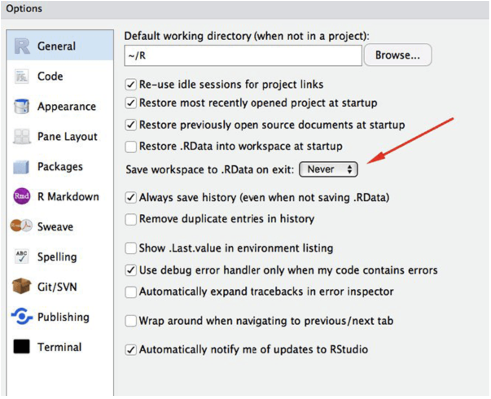

Learning Objectives
With R, the results of your analysis do not depend on remembering a succession of pointing and clicking, but instead on a series of written commands. That means that if (when!) you want to redo your analysis because you collected more data, or you want to run the same analyses on a different dataset, you don’t have to remember which button your clicked to obtain your results, you just have to run the script again.
Working with scripts makes the steps you used in your analysis clear, and the code you write can be inspected by someone else for their own work, or to give you feedback.
Working with scripts forces you to have a deeper understanding of what you are doing, and facilitates your learning and comprehension of the methods you use.
Reproducibility is when someone else (including your future self) can obtain the same results from the same dataset when using the same analysis.
Short-term goals:
Long-term goals:
An increasing number of journals and funding agencies expect analyses to be reproducible, so knowing R will give you an edge with those requirements.
With 10,000+ packages that can be installed to extend its capabilities, R provides a framework that allows you to combine statistical approaches from many scientific disciplines to best suit the analytical framework you need to analyze your data. For instance, R has packages for image analysis, GIS, time series, population genetics, bioinformatics and a lot more.
The skills you learn with R scale easily with the size of your dataset. Whether your dataset has hundreds or millions of lines, it won’t make much difference to you.
R is designed for data analysis. It comes with special data structures and data types that make handling of missing data and statistical factors convenient.
R can connect to spreadsheets, databases, and many other data formats, on your computer or on the web.
The plotting functionalities in R are endless, and allow you to adjust any aspect of your graph to convey most effectively the message from your data.
Thousands of people use R daily. Many of them are willing to help you through mailing lists and websites such as Stack Overflow, or on the RStudio community.
There are two main ways of interacting with R: using the console or by using script files (plain text files that contain your code).
The console window (in RStudio, the bottom left panel) is the place where R is waiting for you to tell it what to do, and where it will show the results of a command. You can type commands directly into the console, but they will be forgotten when you close the session. It is better to enter the commands in the script editor, and save the script. This way, you have a complete record of what you did, you can easily show others how you did it and you can do it again later on if needed. You can copy-paste into the R console, but the Rstudio script editor allows you to ‘send’ the current line or the currently selected text to the R console using the Ctrl-Enter shortcut.
If R is ready to accept commands, the R console shows a > prompt. If it receives a command (by typing, copy-pasting or sent from the script editor using Ctrl-Enter), R will try to execute it, and when ready, show the results andcome back with a new > prompt to wait for new commands.
If R is still waiting for you to enter more data because it isn’t complete yet, the console will show a + prompt. It means that you haven’t finished entering a complete command. This is because you have not ‘closed’ a parenthesis or quotation. If you’re in Rstudio and this happens, click inside the console window and press Esc; this should help you out of trouble.
We will use RStudio IDE to write code, navigate the files on our computer, inspect the variables we are going to create, and visualize the plots we will generate. RStudio can also be used for other things (e.g., version control, developing packages, writing Shiny apps) that we will not cover during the workshop.
RStudio is divided into 4 “Panes”: the Source for your scripts and documents (top-left, in the default layout), your Environment/History (top-right), your Files/Plots/Packages/Help/Viewer (bottom-right), and the R Console (bottom-left). The placement of these panes and their content can be customized (see menu, Tools -> Global Options -> Pane Layout).
One of the advantages of using RStudio is that all the information you need to write code is available in a single window. Additionally, with many shortcuts, auto completion, and highlighting for the major file types you use while developing in R, RStudio will make typing easier and less error-prone.
One of the benefits of RStudio is something called an RStudio Project. An RStudio project allows you to more easily:
File menu, click on New project.New directory, then New projectrbootcamp. For “Create project as subdirectory of”, you may leave the default, which is your home directory “~”.Create projectFiles tab on the right of the screen, you should see an RStudio project file, rbootcamp.Rproj. All RStudio projects end with the “.Rproj” file extension.RStudio’s default preferences generally work well, but saving a workspace to .RData can be cumbersome, especially if you are working with larger datasets. To turn that off, go to Tools –> Global Options and select the Never option for ‘Save workspace to .RData on exit.’ 
Now that we are ready to start exploring R, we will want to keep a record of the commands we are using. To do this we can create an R script:
File menu, click on New File and then R Script.File then Save.rbootcamp_basicscript.Enter the following code in the script and hit run:
# Define vectors
d <- c(1,2,3,4,5,6,7)
e <- 8:14
f <- "Myplot"
# Plot example
plot(d,e,main=f)Using a consistent folder structure across your projects will help keep things organized, and will also make it easy to find/file things in the future. This can be especially helpful when you have multiple projects. In general, you should separate the original data (raw data) from intermediate datasets that you may create for the need of a particular analysis. For instance, you may want to create a data/ directory within your working directory that stores the raw data, and have a data_output/ directory for intermediate datasets and figure_output/ directory for the plots you will generate.
The working directory is an important concept to understand. It is the place from where R will be looking for and saving the files. When you write code for your project, it should refer to files in relation to the root of your working directory and only need files within this structure.
Using RStudio projects makes this easy and ensures that your working directory is set properly. If you need to check it, you can use:
getwd()If for some reason your working directory is not what it should be, you can change it in the RStudio interface by navigating in the file browser where your working directory should be, and clicking on the blue gear icon “More”, and select “Set As Working Directory”. Alternatively you can use:
setwd("/path/to/working/directory")to reset your working directory. However, your scripts should not include this line because it will fail on someone else’s computer.
The material we cover during this workshop will give you an initial taste of how you can use R to analyze data for your own research. However, you will need to learn more to do advanced operations. The best way to become proficient and efficient at R, as with any other tool, is to use it to address your actual research questions. As a beginner, it can feel daunting to have to write a script from scratch, and given that many people make their code available online, modifying existing code to suit your purpose might make it easier for you to get started.
The following part of this section is from “Modern Dive Section 2.2.3”
Learning to code/program is very much like learning a foreign language, it can be very daunting and frustrating at first. Such frustrations are very common and it is very normal to feel discouraged as you learn. However just as with learning a foreign language, if you put in the effort and are not afraid to make mistakes, anybody can learn.
Here are a few useful tips to keep in mind as you learn to program:
One of the fastest ways to get help is to use the RStudio help interface. This panel by default can be found at the lower right hand panel of RStudio. As seen in the screenshot, by typing the word “Mean”, RStudio tries to also give a number of suggestions that you might be interested in. The description is then shown in the display window.
If you need help with a specific function, let’s say barplot(), you can type:
?barplotIf you just need to remind yourself of the names of the arguments, you can use:
args(lm)## function (formula, data, subset, weights, na.action, method = "qr",
## model = TRUE, x = FALSE, y = FALSE, qr = TRUE, singular.ok = TRUE,
## contrasts = NULL, offset, ...)
## NULLIf you are looking for a function to do a particular task, you can use the help.search() function, which is called by the double question mark ??. However, this only looks through the installed packages for help pages with a match to your search request
??kruskalIf you can’t find what you are looking for, you can use the rdocumentation.org website that searches through the help files across all packages available.
Start by googling the error message. However, this doesn’t always work very well because often, package developers rely on the error catching provided by R. You end up with general error messages that might not be very helpful to diagnose a problem (e.g. “subscript out of bounds”). If the message is very generic, you might also include the name of the function or package you’re using in your query.
However, you should check Stack Overflow. Search using the [r] tag. Most questions have already been answered, but the challenge is to use the right words in the search to find the answers:
The key to receiving help from someone is for them to rapidly grasp your problem. You should make it as easy as possible to pinpoint where the issue might be.
Try to use the correct words to describe your problem. For instance, a package is not the same thing as a library. Most people will understand what you meant, but others have really strong feelings about the difference in meaning. The key point is that it can make things confusing for people trying to help you. Be as precise as possible when describing your problem.
If possible, try to reduce what doesn’t work to a simple reproducible example. If you can reproduce the problem using a very small data frame instead of your 50,000 rows and 10,000 columns one, provide the small one with the description of your problem. When appropriate, try to generalize what you are doing so even people who are not in your field can understand the question. For instance instead of using a subset of your real dataset, create a small (3 columns, 5 rows) generic one. For more information on how to write a reproducible example see this article by Hadley Wickham.